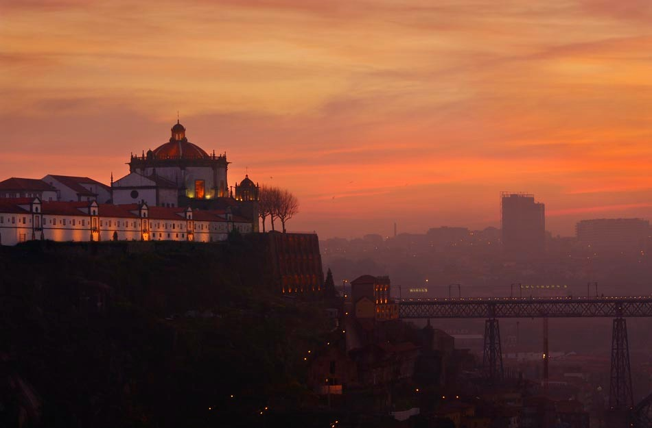

Mosteiro da Serra do Pilar

Edifício do século XVI em Vila Nova de Gaia.

Edifício do século XVI em Vila Nova de Gaia.
Torre barroca do século XVIII no Porto.
| Monumento | Localização | Horário | Preço |
|---|---|---|---|
| Serra do Pilar | Gaia | 10h00 - 18h30 | 4,00 € |
| Torre dos Clérigos | Porto | 09h00 - 19h00 | 8,00 € |